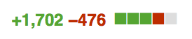
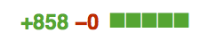
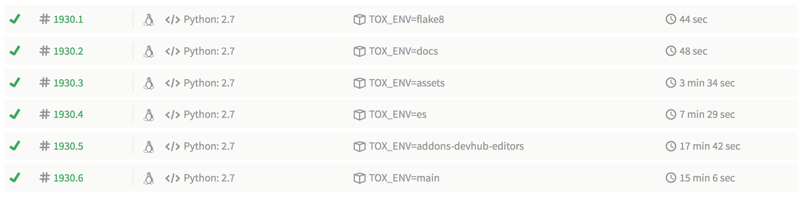

Oui mais pourquoi changer ?
Pourquoi se passer de quelque chose de mieux maintenu et compatible avec les tests actuels ?
versus
 + test
+ test
Par Holger Krekel, l'auteur entre autres de Tox, pypy, devpi
Un équivalent à Unittest, mâture, avec une excellent API et d'excellentes possibilité de personalisation.
Toujours activement développé, et très bien documenté.
Installation : pip install pytest
--duration=10-x (ou --maxfail=n)--pdb--pastebin=failed--showlocals --tb=long@pytest.mark.functional-k test_foo
par chemin : tests/bar/
par module : test_baz.py
par « mark » : -m functional ou -m "not functional"rapports d'échecs intelligents :
def test_eq_dict(self):
> assert {'a': 0, 'b': 1, 'c': 0} == {'a': 0, 'b': 2, 'd': 0}
E assert {'a': 0, 'b': 1, 'c': 0} == {'a': 0, 'b': 2, 'd': 0}
E Omitting 1 identical items, use -v to show
E Differing items:
E {'b': 1} != {'b': 2}
E Left contains more items:
E {'c': 0}
E Right contains more items:
E {'d': 0}
E Use -v to get the full diff
Il y en a beaucoup d'autres. Beaucoup.
Fixtures par injection de dépendance,
peuvent être utilisées à la place de (setUp|tearDown)(function|class|module|package)
def test_view(rf, settings):
settings.LANGUAGE_CODE = 'fr'
request = rf.get('/')
response = home_view(request)
assert response.status_code == 302
abracadabra
Fixtures par injection de dépendance :
def test_view(rf, settings):
settings.LANGUAGE_CODE = 'fr'
request = rf.get('/')
response = home_view(request)
assert response.status_code == 302
abracadabra
Écrire une seule fois le test, le lancer avec plusieurs entrées
@pytest.mark.parametrize(("input", "expected"),
[("3+5", 8), ("2+4", 6)])
def test_eval(input, expected):
assert eval(input) == expected
Travailler plusmoins pour tester plus
Au niveau global, dans le fichier pytest.ini : principalement pour la déclaration des « mark » et les options par défaut
[pytest]
addopts = --reuse-db --tb=native
python_files=test*.py
markers =
es_tests: mark a test as an elasticsearch test.
--reuse-db c'est de la balle
Au niveau local, impacte le répertoire en cours et ses descendants : pour les fixtures, les plugins, les hooks
import pytest, os
def pytest_configure():
# Shortcut to using DJANGO_SETTINGS_MODULE=... py.test
os.environ['DJANGO_SETTINGS_MODULE'] = 'settings_test'
# There's a lot of python path hackery done in our manage.py
import manage # noqa
On parle pas du même impact
Il existe de très nombreux plugins intégrés, mais aussi de la communauté
--create-db, fixtures (rf, client, admin_client...)--cov myproj tests/--lf-n NUM--reuse-db--create-db
[pytest]
addopts = --reuse-db
bon pour ma santé mentale
@pytest.mark.django_db
def test_avec_db(self): # fonction/méthode
@pytest.mark.django_db
class TestFoo(TestCase): # classe
pytestmark = pytest.mark.django_db # module
De toute manière, qui a besoin d'une DB de nos jours
dans conftest.py
def pytest_collection_modifyitems(items):
for item in items:
item.keywords['django_db'] = pytest.mark.django_db
Tant pis pour toi
Utilisation de simples assert
Pas de camelCase comme self.assertEqual
assert 1 == 2 ou self.assertEqual(1, 2)assert True ou self.assertTrue(True)assert not None ou self.assertIsNotNone(None)self.assertAbstractSingletonProxyFactoryBean. Just joking. Or am I?
Pourquoi se passer de quelque chose de mieux maintenu et compatible avec les tests actuels ?
versus
+ test
Pas d'injection de dépendance (et donc pas non plus de paramètres), bien qu'on puisse utiliser les fixtures autouse
Pas de fixture bundling, donc les tests sont plus lents, mais Django 1.8 test case data setup et la possibilité de faire des builds en parallèle avec Travis
Des broutilles je vous disfind . -name test* | wc -l
ag "class Test" | wc -l
ag "def test_" | wc -l
ag "self.assert|ok_|eq_" | wc -l
Je l'ai déjà dis deux fois, py.test est compatible avec votre code actuel.
la preuve 
Nan mais en vrai  pour l'ajout d'un fichier de fixtures de données.
Haha.py.test versus
REUSE_DB=1 python manage.py test --noinput --logging-clear-handlers --with-id
Rajout de @pytest.mark.django_db sur notre TestCase
de base
Rajouts de pytestmark = pytest.mark.django_db dans les 35
fichiers qui en ont besoin
def pytest_collection_modifyitems(items):
for item in items:
item.keywords['django_db'] = pytest.mark.django_db
J'ai espoir de pouvoir utiliser cette feature
Il manquait des appels à super() dans les
(setUp|tearDown)(class),
magouille sur le PYTHONPATH dans manage.py :
import manage.py
@pytest.fixture(autouse=True, scope='session')
def _load_testapp():
installed_apps = getattr(settings, 'INSTALLED_APPS')
setattr(settings, 'INSTALLED_APPS', installed_apps + extra_apps)
django.db.models.loading.cache.loaded = False
J'ai vomi dans ma bouche
tox
permet d'avoir un PYTHONHASHSEED différent à chaque run.
Mais du coup, il faut faire attention aux tests sur les dictionnaires
(non ordonnés !)
Pas de recompilation et récupération des statics pour les tests :
@pytest.fixture(autouse=True)
def mock_inline_css(monkeypatch):
import amo.helpers
monkeypatch.setattr(amo.helpers, 'is_external',
lambda css: True)
de toute façon je fais que du back-end
Avec py.test, tox et travis, c'est un jeu d'enfant

De plus de 50 minutes à moins de 20
Je sais que c'est lent. Mais c'est BEAUCOUP MOINS lent.pip install pytest && py.test
formation à py.test : http://www.merlinux.eu/~hpk/testing.pdf
ces slides : http://mathieu.agopian.info/presentations/2015_05_djangocong/
plus d'excuses